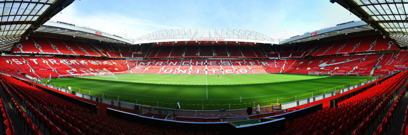

Sobre o Manchester United:
O Manchester United Football Club é um clube inglês, sediado em Trafford (na região metropolitana de Manchester) sendo um dos times mais populares e mais bem sucedidos de sempre da Inglaterra e do mundo. Manchester United é o clube de maior sucesso na Inglaterra, tendo ganho 38 tÃtulos importantes ao comando considerados por alguns o melhor treinador a atuar na premier league, os adeptos do manchester united são conhecidos por red devils(diabos vermelhos 😈). O estádio do manchester é o old trafford
Old trafford
Os tÃtulos mais importantes ganhos até ao momento.
| Competições | TÃtulos |
|---|---|
| UEFA Champions League | 2x |
| UEFA Europa League | 1x |
| Premier League | 20x |
| FA Cup | 12x |